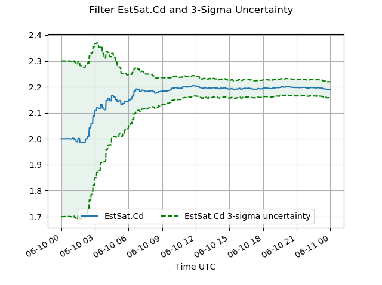

Go to your <GMAT Installation>/output directory. You should have three new files there – filter.txt, filter.mat, and filter.csv. Let’s start with filter.txt.
Generation of the MATLAB data file requires GMAT to be properly connected to a licensed MATLAB instance. If you do not have MATLAB, the MATLAB data file cannot be generated and you should skip the python plotting exercises below. If you don’t have MATLAB it is still possible to generate data files from the run that are suitable for plotting. Many parameters such as Spacecraft OrbitErrorCovariance, Cd, CdSigma, and others can be written dynamically to an external report file. See ReportFile for details on how to do this.
Open filter.txt for reading in a text editor.
The filter.txt file is the detailed estimator output report and is the first stop for reviewing the status of the filter run. There’s a lot of detail in the report, so we’ll just hit the important points here. From top to bottom, the file contains the following content:
Initial spacecraft state and covariance,
Spacecraft hardware summary,
Force modeling options summary,
Measurement modeling summary,
Summary of relevant space environment constants,
Report of all filter measurement residuals,
Filter estimation summary report,
Filter covariance report.
Everything prior to the FILTER MEASUREMENT RESIDUALS report is just feeding back the input configuration you supplied to the filter. You can use those sections when troubleshooting, or to confirm that GMAT interpreted your inputs as you intended.
Review the FILTER MEASUREMENT RESIDUALS report. This shows the results of the filter processing of each measurement. Each input GPS_PosVec tracking data measurement record produces three lines in this report – the first for the X-value, the second for the Y-value, and the third for the Z-value. Each line starts (from left to right) with the measurement record number, the measurement time (now in UTC), the measurement type name (GPS_PosVec), and the name of the spacecraft associated with the measurement. Next is a column in which an edit flag may appear. Since this run used simulated data, it is likely that no edit flags appear in your run, but it is possible that you may see a small number of measurements tagged with the SIG edit criteria. This flag will be described shortly below.
Next across the line appears the measurement Observed value. This is the exact value of the measurement extracted from the input tracking data file. The next column shows the Computed value of the measurement. The computed value is the predicted value of the measurement, and is obtained by propagating the spacecraft current estimated state using the force modeling options we have configured in the script. The computed value should normally be close to the observed value if estimation is going well. The final column shows the difference between the observed and computed values. This is called the measurement “residual” and is the value that was plotted in the graph that appeared when the filter was running. The last column, “Elev”, is for the measurement elevation angle and it not populated for GPS_PosVec measurements.
The filter uses the residual value to determine if a measurement should be accepted or rejected. If the computed residual is larger than three times the combined state uncertainty and measurement noise, the filter will ignore the measurement. If this happens, the measurement will be identified with the SIG (for “sigma”) edit flag in the report. This is called the “scaled residual check”, and the multiplier value (in this case the default of 3) can be changed on the EKF resource instance, if desired. Since we used simulated data in this run, you might not see any edited points, but you are much more likely to encounter autonomous sigma editing when using real data. When QA’ing any filter run, you should review this report to ensure that most of the data was accepted across the entire run, from start to finish. If at some point in the report you begin to see excessive data editing, that is a sign that something has gone wrong in the filter. Perhaps you have insufficient process noise and the covariance has gotten too small, maybe your presumed measurement noise is too small, or maybe an unmodeled maneuver has occurred.
The next section of the output report, FILTER MEASUREMENT STATISTICS, is a useful summary of the residual report. Here you can see the start and end time of the data span. You should make sure they are what you expected them to be. You also see a summary of the total number of observations available in the run and the number accepted (“Used For Estimation”). If any points were edited out, they will be noted here in the “Sigma Editing” count. Below that, you can see at a glance how much data was accepted in the run along with overall residual statistics. A well-operating filter should normally accept nearly all of the available good tracking data. Remember, that we are looking here at simulated tracking data, which is much closer to perfect than real tracking data, which often has more outliers and poor measurements. Your expectations for data acceptance for your mission need to be set by analysis and trending of your data.
Next in the output report comes the FILTER STATE INFORMATION. This gives a summary of the estimated spacecraft state, and any other estimated parameters, at the end of the run, which specifically is the time of the last measurement processed. In our case, we see the estimated Cartesian state and Cd value, as well as the final uncertainties of each estimated parameter. For convenience, GMAT also reports the Keplerian elements of the estimated state, along with a collection of other useful orbit parameters that may be derived from the Cartesian set. GMAT also reports here the full covariance matrix (here 7x7, since it includes the 6-element Cartesian state and the Cd), and correlation matrix for both the Cartesian and Keplerian element sets.
Lastly, the output report shows a detailed FILTER COVARIANCE REPORT. The filter covariance report displays records at all of the measurement times, and at the process noise update intervals. Recall that on the process noise model we set the UpdateTimeStep to 120 seconds. In the covariance report, between measurements and at 120-seconds intervals, additional records are written. Each record displays the current orbit position uncertainty in a Velocity-Normal-Binormal frame. You should be able to see that the covariance starts with the input value of 100 meters that we assigned on the EstSat OrbitErrorCovariance, and that the orbit uncertainty always decreases when a measurement is used, and always increases between measurements.
Each measurement record also includes reporting of the computed scaled residual. This is a unitless value that is computed in the residual sigma edit check mentioned above. Since we are using the default sigma edit criteria of 3, any measurement with a scaled residual value greater than 3 will have been edited. If any points in you run were edited, you can check this by finding their scaled residual in this report section. Note that the scaled residual of each GPS_PosVec component (X, Y, Z) is computed separately, but if any of the triplet exceeds the scaled residual threshold, all three components will be rejected.
The filter output report, and especially the filter measurement statistics section, is very useful in assessing the status and quality of the filter run, but graphs are often a more useful way of quickly reviewing large amounts of data. Next, let’s take a look at some tools that produce graphs using the filter.mat MATLAB output file. If you have MATLAB but did not get a filter.mat file, then there is a problem with the GMAT MATLAB interface. See MATLAB Interface for information on configuration and troubleshooting.
Let’s begin by plotting the filter residual ratios. You must have a Python 3 installation that includes scipy, numpy, pandas, and matplotlib to run these examples. If you are using Anaconda Python you should be fine.
Open a DOS prompt and navigate to the directory containing the sample Python analysis scripts. You can find them in the <GMAT installation>/utilities/python/navigation directory.
In that directory, type the following:
python plot_residual_ratios.py <full path to filter.mat>In a few seconds, you should see a plot similar to that below. This shows all the scaled residual values that we previously saw in the filter covariance report section of the report file. In plot form, it is easier to assess the overall trends. The green highlighted region between ±3 shows the scaled residual threshold gate we are using. Any point plotted inside this region represents an accepted measurement. If any points appear outside the highlighted region, they were rejected by the scaled residual edit criteria.
Real tracking data won’t look this good and can be expected to show more “structure” than just random noise. When reviewing a scaled residual plot, you should make sure that the majority of data was accepted, and especially that the distribution of accepted data looks approximately similar over the entire run (beginning, middle, and end). By the way, each of these Python scripts is also generating a PDF version of the plot and comma-separated value (CSV) file of the plot data, for archive or further analysis.
Next, let’s look at the estimated coefficient of drag.
In the script directory, type the following:
python plot_solve_fors.py <full path to filter.mat>After a few seconds, you should see a plot similar to the one below. This displays the filter estimate of the coefficient of drag over the run. Recall that for the simulated data we used a Cd of 2.2, but we started the estimator with an initial Cd of 2.0 and with an initial CdSigma of 0.1. This can be seen at the beginning of the graph, where the initial value of Cd is 2.0 and the 3-sigma uncertainty bounds (the green region in the plot) encompass the range 1.7 to 2.3. As the filter runs and incorporates measurements, it “senses” that the value of Cd it was given is not quite right and begins moving it toward the correct (simulated) value of 2.2. At the same time this is happening, the bounds of uncertainty are decreasing as the filter uses more measurements and becomes more “confident” in its estimate.
|  |
When running a filter, you should always review plots like this of all the “non-position and velocity” estimated parameters in the run. You should make sure the estimated value is staying within expected bounds based on mission experience and any physical limitations that may be inherent in the parameter (for example Cd should always be positive). You should also ensure that the parameter uncertainty does not become too small. This can happen if our FOGM EstimatedParameter process noise (derived from the SteadyStateSigma and HalfLife) is too small. If the uncertainty is too small, the filter may become overconfident in its estimate of the parameter and unable to react to rapid or sudden changes in drag that might occur, for example in the instance of a solar storm. This could ultimately lead to the filter diverging and starting to reject all incoming new measurements.
We don’t typically look at similar plots of the estimated values of position and velocity, because they will oscillate too dramatically to be useful. Ephemeris comparisons (which won’t be covered in this tutorial) are an essential aid to assessing the estimated position and velocity. However, it’s useful to look at plots of the position and velocity uncertainty, so we’ll do that next.
In the script directory, type the following:
python plot_covariance.py <full path to filter.mat>After a few seconds, you should see a plot similar to the one below. The image below is a zoom of the plot that will show up for you. You can zoom in on your plot to see something similar. There will actually be two plots, one for position uncertainty and one for velocity uncertainty, but we just show the position uncertainty plot here. The velocity plot looks and is interpreted similarly to the position uncertainty plot. In the velocity plot, the radial velocity uncertainty will be largest (instead of along-track velocity) due to correlation of along-track position with radial velocity.
Here we see the filter 1-sigma filter position uncertainty. Notice that the curves all start at the value of 100 meters, which is the value we assigned (in squared form) on the estimated spacecraft initial OrbitErrorCovariance. Secondly, note that the uncertainty rapidly collapses to “steady state” values of about 5 meters in the V (velocity) component, about 2 meters cross-track (N) and about 1 meter or so radial (B). This rapid collapse occurs as the filter begins to incorporate measurements and improves its estimate of the state. The flattening of the covariance curves is a sign of filter “convergence”. When a filter is operating normally, it should remain in a converged state. Because GPS_PosVec data is very consistent in its measurement density, the covariance should remain pretty constant. Other measurement types that come in more randomly will cause the state estimation uncertainty to exhibit larger variations due to gaps in the measurement data. If you zoom in closely on your plot you will be able to observe a “sawtooth” pattern, particularly in the V-component, which is characteristic of filter operation. The uncertainty grows in sawtooth-like fashion between each measurement, and then collapses down again each time a measurement is accepted. This reflects how process noise always drives the filter uncertainty larger in the absence of measurements, while using a measurement always decreases the filter uncertainty. Later if you wish, you can experiment with different values of the ProcessNoiseModel AccelNoiseSigma to see how this affects this behavior.
All signs show that this is a good filter run, so let’s go on to configure and run the smoother.